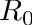
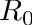
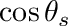
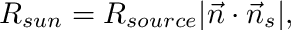
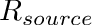
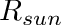
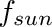

|
v1.3.9
|
Loading...
Searching...
No Matches
|
v1.3.9
|
In this tutorial, we will consider radiation transfer in a homogeneous, horizontally infinite canopy. This canonical canopy case will allow for comparison against theoretical values computed from Beer's law. Our goal will be to simulate the fraction of photosynthetically active radiation (PAR) absorbed by the canopy and the fraction of sunlit/shaded leaf area, and compare the 3D simulated values against Beer's law. This tutorial will integrate the Canopy Generator plug-in to create the canopy geometry, and the Voxel Intersection plug-in to slice leaves that lie on the canopy boundary.
Beer's law describes the probability that a collimated bean of radiation propagating through a homogeneous medium of particulates is intercepted. For a canopy of leaves, Beer's law can be written as
![\[\dfrac{R}{R_0}=\left[1-\mathrm{exp}\left(-\dfrac{G\,LAI}{\mathrm{cos}\,\theta_s}\right)\right],\]](form_0.png)
where  is the average radiation flux absorbed by the canopy,  is the above-canopy radiation flux on a horizontal surface,
is the average radiation flux absorbed by the canopy,  is the above-canopy radiation flux on a horizontal surface,  is the fraction of absorbed radiation,
is the fraction of absorbed radiation,  is the fraction of leaf area projected in the direction of the sun,
is the fraction of leaf area projected in the direction of the sun,  is the one-sided canopy leaf area per unit ground area, and is the solar zenith angle. The following are the assumptions used to derive this equation: 1) the leaf dimension is "much" smaller than the depth of the canopy layer, 2) the leaf angle distribution is azimuthally isotropic, 3) leaf position is spatially uniform, 4) the canopy extends infinitely in the lateral directions, 5) solar radiation is collimated (i.e., beams are parallel), and 6) leaves absorb all incident radiation.
is the one-sided canopy leaf area per unit ground area, and is the solar zenith angle. The following are the assumptions used to derive this equation: 1) the leaf dimension is "much" smaller than the depth of the canopy layer, 2) the leaf angle distribution is azimuthally isotropic, 3) leaf position is spatially uniform, 4) the canopy extends infinitely in the lateral directions, 5) solar radiation is collimated (i.e., beams are parallel), and 6) leaves absorb all incident radiation.
Operating under similar assumptions, Beer's law can be integrated to determine the fraction of sunlit leaf area
![\[f_{sun}=\dfrac{\mathrm{cos}\,\theta_s}{G\,LAI}\left[1-\mathrm{exp}\left(-\dfrac{G\,LAI}{\mathrm{cos}\,\theta_s}\right)\right].\]](form_7.png)
We will use the Canopy Generator plug-in to create a canopy that matches the assumptions inherent in Beer's law described above. This will be a homogeneous canopy with azimuthally isotropic leaf angle distribution that extends infinitely in the horizontal (via applying periodic boundary conditions).
We start by defining a few variables that will be used later, including parameters specifying the canopy geometry. We'll use a spherical leaf angle distribution, although others are available (also uniform, planophile, erectophile, plagiophile, extremophile). The canopy has an LAI of 1.5 and a height of 1 m. The canopy extends 3x3 m2 in the horizontal (but will be infinitely extended through periodic boundaries).
The Context is declared in the usual way. The CanopyGenerator class is then declared and initialized by passing a pointer to the Context. It's job is to add canopy geometry to the Context. The CanopyGenerator::HomogeneousCanopyParameters structure is declared, which is what is used to set the canopy variables. The leaf_angle_distribution, canopy_extent, canopy_height, and leaf_area_index are straight-forward and set based on the variables we declared above (reference the canopy generator documentation for the list and meaning of all possible variables).
The variables "buffer" and "leaf_subdivisions" are both important and less intuitive. We don't want the canopy to extend further than the horizontal extent we've specified (or the ground). This can be dealt with in two ways. One is to add a "buffer" of a half leaf width from the canopy boundaries such that no leaves lie on the boundaries. This is not ideal because it will result in a canopy that is not perfectly periodic. Alternatively, we could add no buffer and crop the canopy exactly to the canopy boundaries, which is what we'll do below. In that case, specify the buffer as "none".
The "leaf_subdivisions" variable specifies how many sub-patches (rectangles) should be used to represent each leaf. This does not matter much for computing total canopy absorbed radiation, but it is important to have adequate leaf sub-patch resolution to accurately compute the fraction of sunlit leaf area since we need to resolve shadows on leaves. See the references Kent and Bailey (2021) and Bailey and Kent (2021) for a detailed investigation. We'll use 5x5=25 sub-patches as a compromise.
The canopy is built using the CanopyGenerator::buildCanopy() function, which takes the parameter structure we created earlier. UUIDs of leaf primitives in the canopy can be queried using the CanopyGenerator::getLeafUUIDs() function, which we'll store for use in the next step.
As introduced above, we have not applied a "buffer" at the canopy boundaries, and thus we have some primitives that extend beyond the intended boundaries. We'll use the Voxel Intersection plug-in to crop leaves to the exact location of the boundary, and then use the helios::Context::cropDomain() function to remove remaining leaf segments beyond the boundaries.
The VoxelIntersection class is declared and initialized in a similar way as other plug-ins by passing a pointer to the Context. It's job will be to slice any primitives lying on the canopy boundaries, which creates two or more triangle primitives with a break along the slicing plane. Two variables are defined that give the (x,y,z) coordinates of the canopy center location and the width of the canopy in the x-, y-, and z-directions:
vec3 slice_box_center(0,0,0.5f*canopy_height);
vec3 slice_box_size(canopy_extent.x,canopy_extent.y,canopy_height);By default, the canopy is centered at the location (0, 0, 0.5*canopy_height), and as we specified before the dimensions of the canopy are (canopy_extent.x, canopy_extent.y, canopy_height).
The slicing is performed using the function VoxelIntersection::slicePrimitivesUsingGrid(). This function has the potential to slice based on a sub-divided voxelized grid, but since we only want to slice on the boundaries we'll specify the grid subdivisions as (1, 1, 1) (i.e., not subdivided).
The helios::Context::cropDomain() function is then used to crop the domain to the canopy boundaries, which will remove leaf segments outside of the specified boundaries. Some of the primitives the Canopy Generator created may no longer exist if the were sliced and/or cropped, and thus the "UUIDs_leaves" contains UUIDs referencing primitives that no longer exist. We can use the helios::Context::getAllUUIDs() function to get all the UUIDs currently in the Context, which at this point only contains leaves.
Finally, we add a ground surface using the helios::Context::addTile() function. For this particular tutorial, a ground is not explicitly needed because we have no diffuse/scattered radiation that could emanate from below.
The set-up of the radiation model is very similar to the previous tutorial, except for two main differences: 1) we add a collimated radiation source rather than a "sun sphere" to match the assumptions of Beer's law, 2) the solar flux is set to a normalize value of 1.0 since we only compute absorption fractions. A variable defining the sun direction was defined at the beginning of the main() function, which is used to set the direction of the collimated source. It is important to note that the solar flux value of 1.0 that we set for the source is the flux perpendicular to the sun direction, and needs to be multiplied by the cosine of the solar zenith angle to get the flux on a horizontal surface.
Radiation model calculations are performed when the RadiationModel::runBand() function is called.
In order to apply Beer's law, we need to calculate the G-function (fraction of leaf area projected in the direction of the sun). In this example, we used a spherical leaf angle distribution, in which case G = 0.5 regardless of sun direction. However, if a different leaf angle distribution was used, G would vary with sun angle. Either way, it is a good exercise to calculate this important parameter.
The G-function is simply the average dot product (absolute value) between the leaf normal and the sun direction. In this example, each leaf element has the same area, but in general this may not be the case, and the average should be area-weighted to avoid biasing toward small primitives. Functions are available to perform each of the necessary operations: a) the helios::Context::getPrimitiveNormal() function returns a unit vector pointing in the direction of the primitive normal, b) the helios::Context::getPrimitiveArea() function returns the primitive surface area, and c) the '*' operator when applied to two vec3's will calculate the dot product.
Calculation of the G-function based on the 3D geometry can be written as
![\[G = \sum\limits_i |\vec{n}_i \cdot \vec{n}_s |A_i/\sum\limits_i A_i,\]](form_8.png)
where  is the normal of the ith leaf primitive (unit length), is a unit vector pointing in the direction of the sun, and
is the normal of the ith leaf primitive (unit length), is a unit vector pointing in the direction of the sun, and  is the area of the ith leaf primitive.
is the area of the ith leaf primitive.
Beer's law gives the radiation flux absorbed by the canopy on a ground area basis, so we will need to calculate this flux based on the 3D model result. It is important to note that the 3D model gives fluxes on a leaf area basis, which can be converted to ground area basis by multiplying the LAI.
The flux absorbed by the canopy is simply the area-weighted average leaf PAR flux multiplied by the LAI, which can be written as
![\[R = LAI\sum\limits_i R_i A_i / \sum\limits_i A_i,\]](form_12.png)
where  is the absorbed PAR flux of the ith leaf primitive. The helios::Context::calculatePrimitiveDataAreaWeightedMean() function can be used to easily calculate the area-weighted average of the primitive data "radiation_flux_PAR".
is the absorbed PAR flux of the ith leaf primitive. The helios::Context::calculatePrimitiveDataAreaWeightedMean() function can be used to easily calculate the area-weighted average of the primitive data "radiation_flux_PAR".
The theoretical absorbed PAR flux can be calculated by substituting appropriate values into the equation for Beer's law given above. One important thing to remember is that the radiation flux specified in Helios is the flux on the surface perpendicular to the sun direction, whereas the source flux specified in Beer's law is the flux on a horizontal surface. Thus, the source flux specified in Helios needs to be multiplied by  to get the flux on a horizontal surface. The helios::cart2sphere() function is used to convert our Cartesian vector specifying the sun direction into a spherical coordinate, from which we can get the zenith angle.
In order to calculate the fraction of sunlit leaf area for the canopy, we need to determine whether each leaf element is sunlit or shaded. This is tricky because 1) the fully sunlit PAR flux for a given leaf depends on its angle relative to the sun, and 2) many leaves will neither be 100% sunlit or 100% shaded, but somewhere in between. To deal with the first issue, we first calculate what the fully sunlit flux should be for each leaf based on its angle, which is

where  is the PAR flux on a plane perpendicular to the sun, and other symbols are as defined above. We then define a "sunlit" leaf as a leaf whose actual absorbed flux is greater than 50% of . We then identify which leaves are "sunlit" according to this definition, and sum their areas. The fraction of sunlit leaf area is then the area of sunlit leaves divided by the total leaf area.
Calculation of the theoretical fraction of sunlit leaf area is simply a matter of plugging values into the equation for  above.
#include "RadiationModel.h"
#include "CanopyGenerator.h"
#include "VoxelIntersection.h"
using namespace helios; //note that we are using the helios namespace so we can omit 'helios::' before names
int main(){